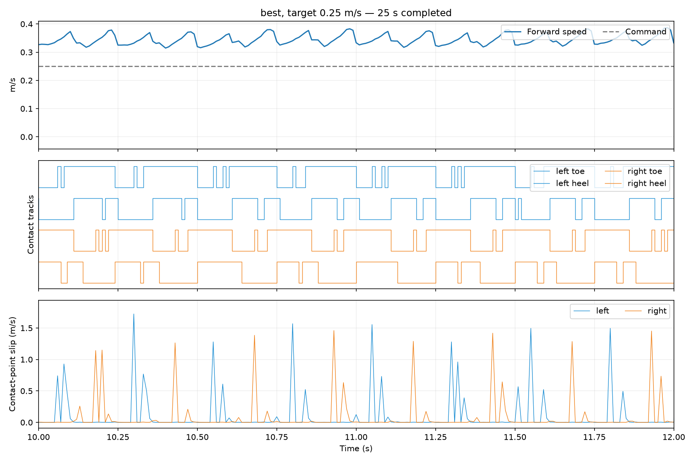
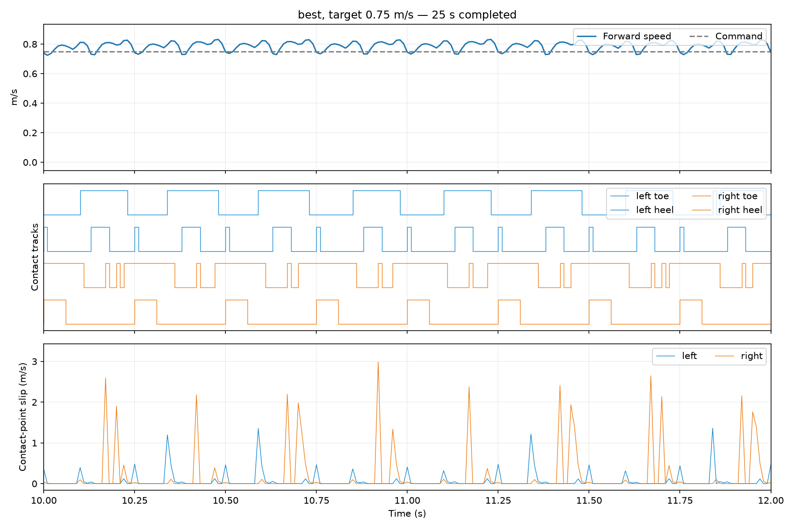
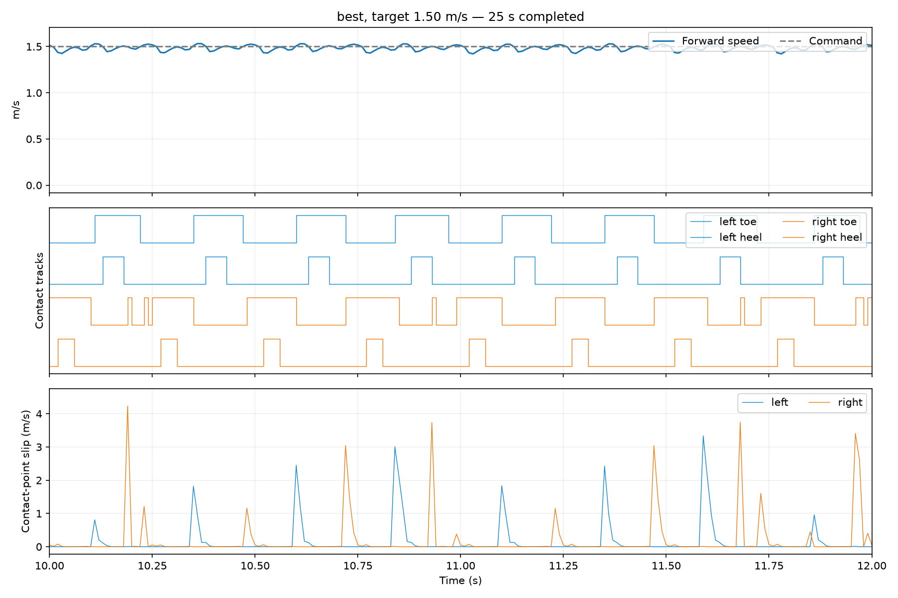
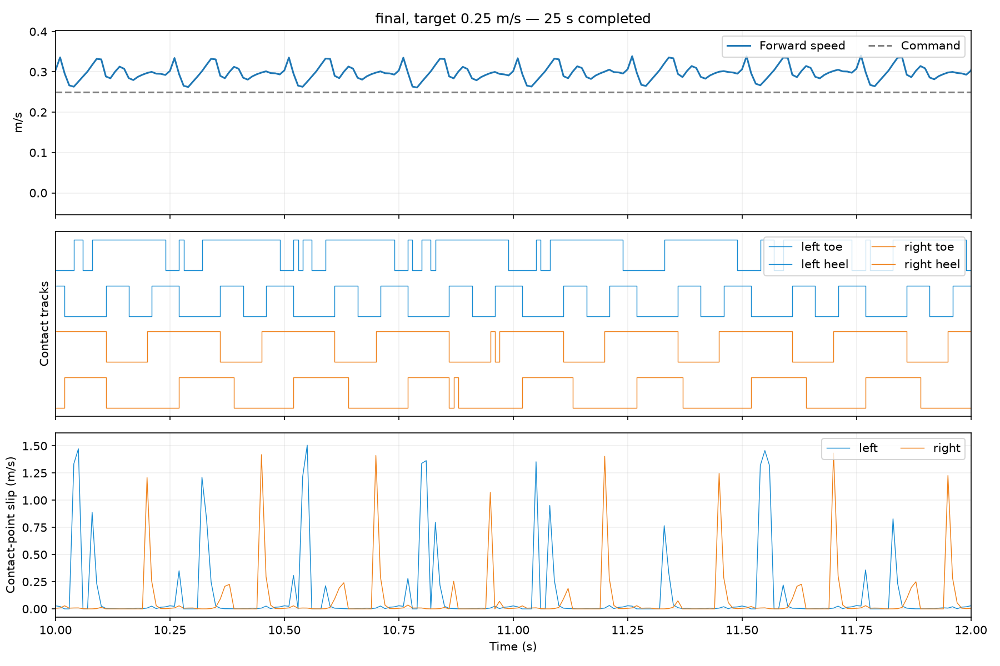
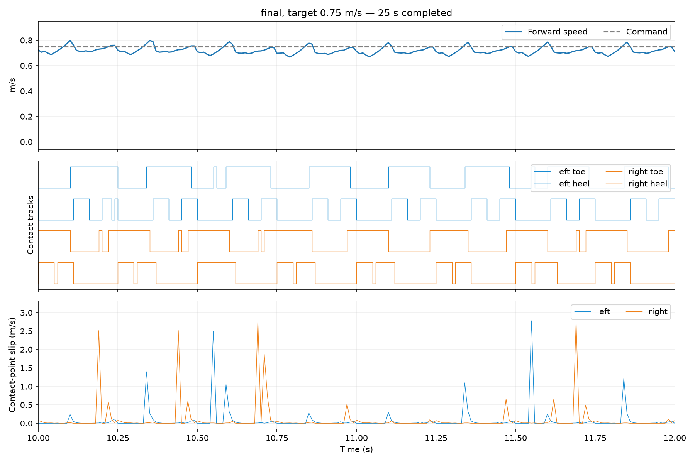
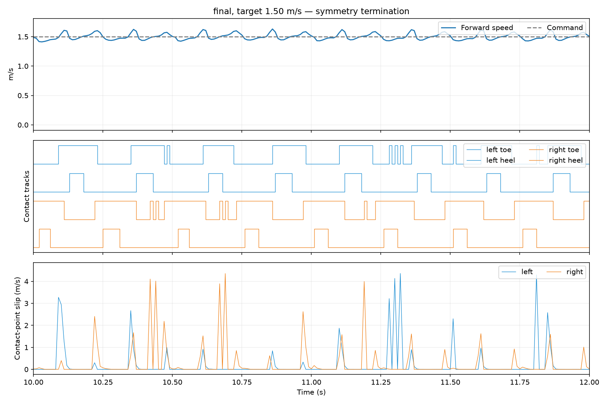
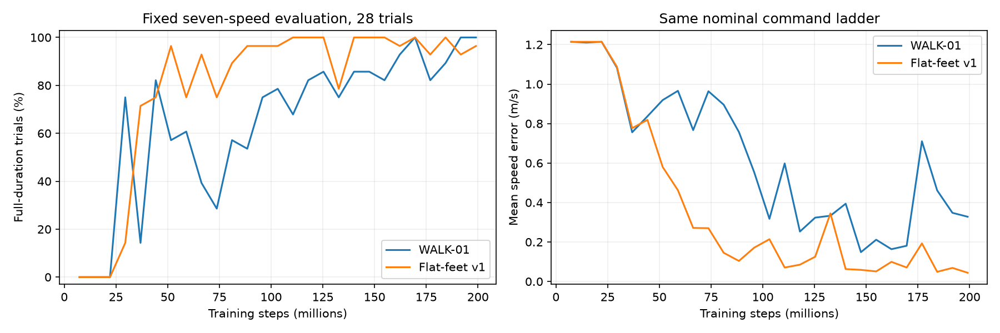
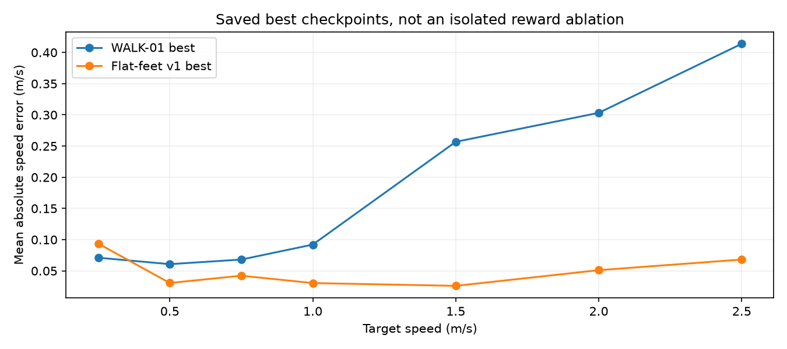
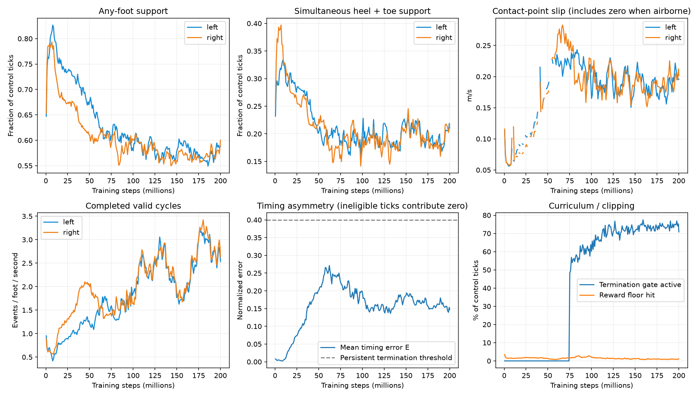
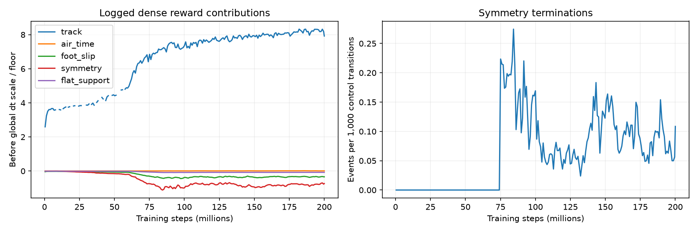

Job 3226505 completed in 12h54m. Best checkpoint: 184.32M, 28/28 full-duration trials, 0.049 m/s tracking error (WALK-01 best: 0.181 m/s). Final periodic evaluation: 27/28, 0.044 m/s. Better tracking is not proof of clean walking: inspect slip and foot motion.
Videos use the frozen training simulator, nominal plant, fixed commands, seed 1000. Both cameras show the same instant. Blue = left foot; orange = right. Trials stop at their first termination; resets are not spliced into the video. These are single trials per condition.
Important: the best checkpoint is not consistently the cleanest gait. At 0.75 m/s it registers only 1 valid left cycle versus 80 right cycles after 5 s, without terminating. Brief contact interruptions can prevent valid-cycle history from updating while also resetting the planted-leg timer. The final checkpoint is more balanced at this speed (77/68), but its 1.5 m/s trial ends through the symmetry rule. Inspect both checkpoints.
Checkpoint 184,320,000; 25.00 s; 25 s completed. Mean speed after 5 s: 0.344 m/s. Completed cycles L/R after 5 s: [78, 80].

Checkpoint 184,320,000; 25.00 s; 25 s completed. Mean speed after 5 s: 0.787 m/s. Completed cycles L/R after 5 s: [1, 80].

Checkpoint 184,320,000; 25.00 s; 25 s completed. Mean speed after 5 s: 1.483 m/s. Completed cycles L/R after 5 s: [80, 80].

Checkpoint 200,005,632; 25.00 s; 25 s completed. Mean speed after 5 s: 0.298 m/s. Completed cycles L/R after 5 s: [36, 60].

Checkpoint 200,005,632; 25.00 s; 25 s completed. Mean speed after 5 s: 0.721 m/s. Completed cycles L/R after 5 s: [77, 68].

Checkpoint 200,005,632; 19.22 s; symmetry termination. Mean speed after 5 s: 1.501 m/s. Completed cycles L/R after 5 s: [54, 36].





Training plots average 50 adjacent logged updates and include randomized plants and commands. They are not the same protocol as the fixed-command nominal clips. Aggregate L/R agreement can hide asymmetry within individual episodes. Flat contact fractions are over all ticks, not just mid-stance.
Early slip-curve gaps mark nonfinite diagnostic entries (31 logged updates per side, 9.49–56.99M steps). Logged mean rewards remain finite. These missing diagnostic values are not interpolated.
Experiment report · Swing clearance measurements · Numerical results · Previous WALK-01 videos